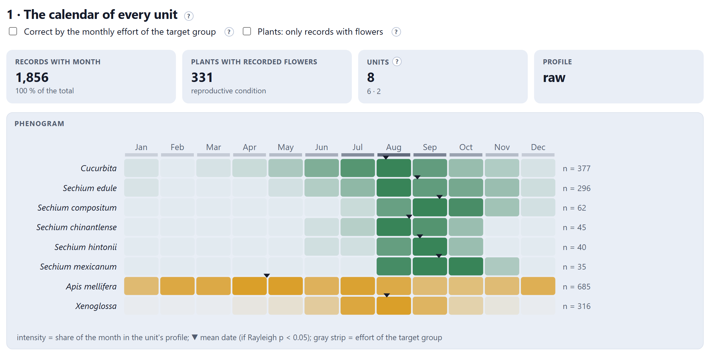
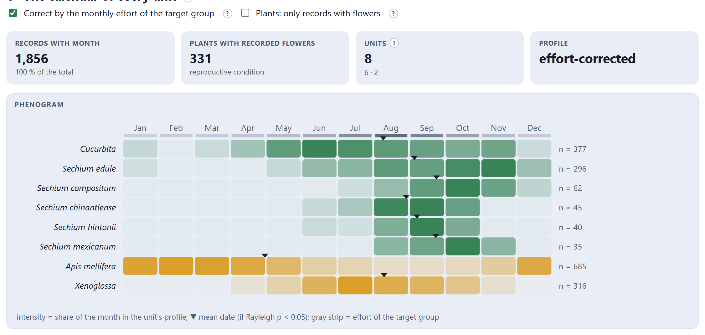
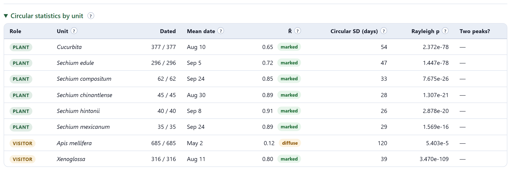
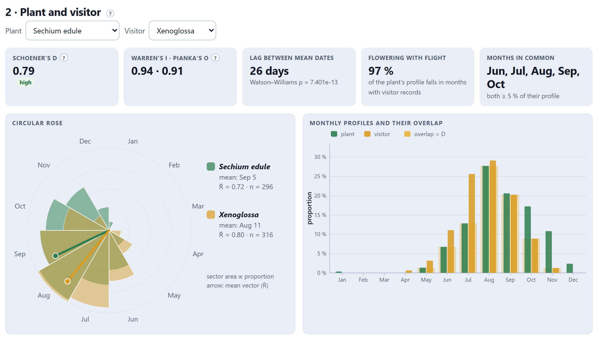
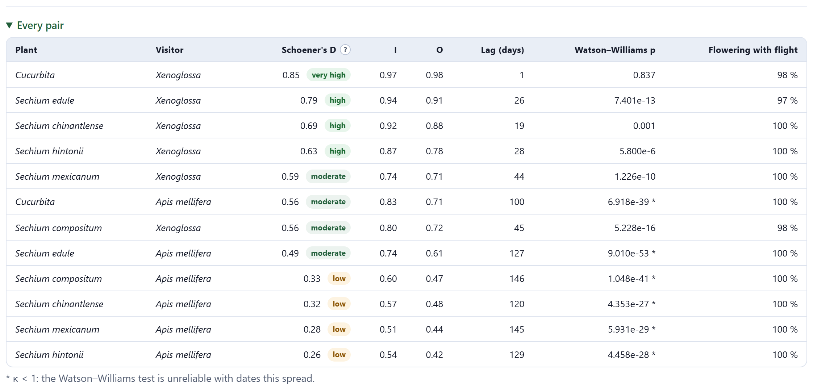
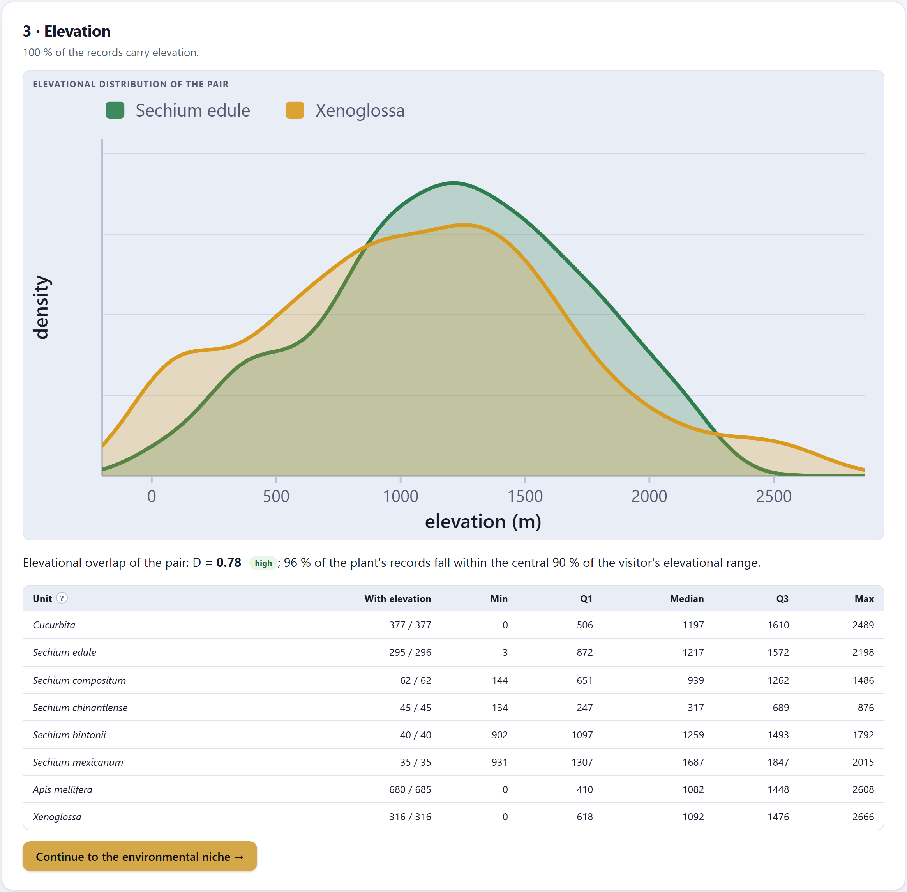

Does the visitor fly when the plant flowers, and at the same elevation? Record dates are read as circular statistics —the year is a circle—: mean date, concentration, seasonality and difference between calendars. Monthly profiles are compared with the same overlap indices as the niche, with the option of correcting for the sampling effort of each month. And elevation is compared with densities along the gradient.
December 31 and January 1 are one day apart. Treating dates as numbers from 1 to 365 gives a plant that flowers from November to February its “mean” in June. Circular statistics turn each date into an angle and solve the problem (Batschelet 1981; Fisher 1993; Morellato et al. 2010).
Day d is equivalent to the angle θ = 2π(d − ½)/365. The mean date is the direction of the average vector of all the records, and its length R̄, from 0 to 1, measures concentration: 1 if all fall on the same day, 0 if they are spread evenly over the year. The circular standard deviation, in days, is its more intuitive version. The Rayleigh test says whether the distribution is seasonal (small p) or uniform; the Watson–Williams test, whether two calendars have the same mean date (Zar 2010), and it requires that they not be too spread out (κ ≥ 1).
A dated record does not necessarily say that the plant was in flower: a herbarium specimen may be vegetative or in fruit. That is why the checkbox Plants: only records with flowers uses only the records whose reproductive condition says flower or anthesis. And the number of records per month also reflects when people go to the field: the checkbox Correct by the monthly effort of the target group divides each profile by the records of the whole study in that month (Section 6.2).

The tiles say how many records carry a month (all 1,856 cleaned ones, 100%), how many plants have flowers recorded in their reproductive condition (331), how many units enter (6 plants and 2 visitors) and whether the profile is raw or corrected. The phenogram shows the essentials at a glance: the five Sechium species and the squashes flower from July to October; Xenoglossa flies from June to September; the honey bee is recorded all year round.

Correcting divides the fraction of each month by the effort of that month, and the months with very few records in the whole study (fewer than five) are set to zero so as not to divide by almost nothing. Even so, with few records the correction amplifies the noise, as in Figure 6.2. The correction changes the monthly profiles and the overlap indices; the mean date and R̄ are always computed with the dates of the records. Report the raw and the corrected result, and say which one you use to draw conclusions.

| Column | What it says |
|---|---|
| Dated | How many of the unit’s records enter, out of how many it has. |
| Mean date | The direction of the mean vector, as day and month. |
| R̄ | The concentration, with its label: diffuse, moderate or marked. |
| Circular SD (days) | The spread around the mean date. |
| Rayleigh p | Whether there is seasonality. With hundreds of records it is nearly always very small: look at R̄. |
| Two peaks? | “possible” when the second harmonic is strong (R̄₂ > 0.3 and larger than R̄ + 0.15): two flowering seasons a year, or two populations with different calendars. With two peaks, the mean date falls between them and describes neither. |
| If R̄ < 0.3 | then the unit is recorded almost all year or has two seasons (diffuse): its mean date says little and it should not be compared with Watson–Williams. |
| If R̄ is between 0.3 and 0.6 | then there is a preferred season, but a broad one (moderate). |
| If R̄ > 0.6 | then there is a defined season (marked) and the mean date summarizes it well. |
The ? card for R̄ carries this scale. They are reading conventions, not laws.
The second card compares one plant with one visitor, chosen in its two selectors.

| Tile | What it says | Chayote × Xenoglossa |
|---|---|---|
| Schoener’s D | The fraction of the two calendars that is shared: Σ min(pᵢ, qᵢ) over the twelve months, from 0 to 1 (Schoener 1968). | 0.79 · high |
| Warren’s I · Pianka’s O | Two overlap indices that are more lenient with small differences (Warren et al. 2008; Pianka 1973). They are reported along with D. | 0.94 · 0.91 |
| Lag between mean dates | The days between the two mean dates, with the Watson–Williams p. | 26 days · p ≈ 7 × 10⁻¹³ |
| Flowering with flight | What fraction of the plant’s profile falls in months with records of the visitor. | 97 % |
| Months in common | The months in which both have at least 5% of their profile. | Jun to Oct |
The reading is that of Section 1.4: the practice chayote flowers on average on September 5 and Xenoglossa flies on average on August 11; with hundreds of records, that 26-day lag is highly significant, and yet 97% of the flowering falls in months with bees flying and the two calendars share 79% of their profile. The visitor comes ahead of the plant, but it keeps it company.

| If D < 0.2 | then no or very limited overlap: flowering and flight hardly coincide. |
| If D is between 0.2 and 0.4 | then low. |
| If D is between 0.4 and 0.6 | then moderate. |
| If D is between 0.6 and 0.8 | then high. |
| If D > 0.8 | then very high: the calendars are almost the same. |
The scale is that of Rödder and Engler (2011) for the niche, applied to the calendar. A year-round generalist (the honey bee) has a moderate D with almost every plant because its profile is spread out: always read D together with flowering with flight.
⤓ Units (.csv) and ⤓ Pairs (.csv) download the two tables (phenology_units.csv and phenology_pairs.csv), with the monthly profiles of each unit.
The third card compares the elevational distribution of the pair with kernel densities (Silverman 1986) and computes its D. It needs records with elevation, which GBIF provides only sometimes: in the practice study only 23% of the records carry it, and none of the visitors’. Block 7 can fill it in from an elevation layer (Section 7.2); Figure 6.6 was made after doing so with the practice elevation layer.

The sentence below the figure gives the elevational D and what fraction of the plant’s records falls within the central 90% of the visitor’s range. The table helps to read the wild relatives: in the practice data, S. chinantlense is a lowland species (median 317 m) and S. mexicanum a highland one (1,687 m).
The elevation read from a digital elevation model is that of the cell (at 0.1°, an average over about 11 km), not that of the exact point: in mountains it can differ by hundreds of meters. Records that carried their own elevation keep it; the layer only fills in those that lack it.
| Message | What it means and what to do |
|---|---|
| Only N % of the records carry elevation: the profile may not represent the whole unit | Fill it in from a layer in Block 7, or read elevation with caution. |
| No record carries elevation… | Load a digital elevation model in Block 7 and fill in elevation from there. |
| The chosen pair has no elevations | One of the two units has no record with elevation. |
| * κ < 1 in the pairs table | The dates of one of the units are so spread out that Watson–Williams is unreliable. Use D and flowering with flight. |
| “possible” under Two peaks? | The unit may have two seasons. Check the phenogram and consider separating populations or subspecies (Block 3). |
| Few records with flowers | With Plants: only records with flowers turned on, a plant with few flowering records can end up with a noisy profile. Use it to confirm, not as the only analysis. |